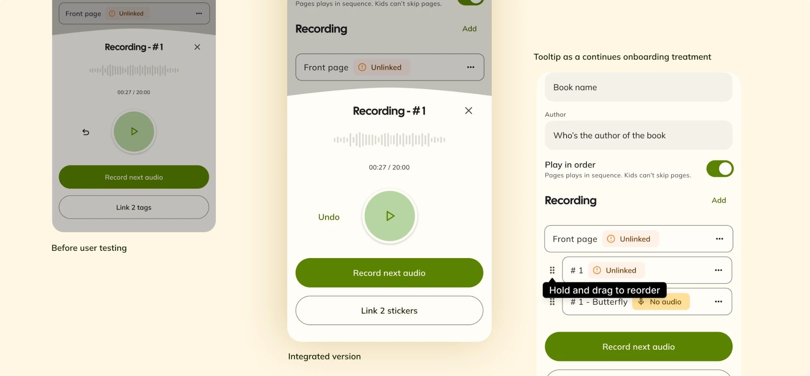

- Client work
- Pre-launch
- Details anonymised
- Product Designer
- iOS & Android
- 2026
Connected learning device
Screen-free audio player for kids
An app to manage the player devices, set up customised audio content, browse the library and receive important alerts.
A client is rethinking what a screen-free interactive learning experience for kids can be.
I designed a mobile app for nursery educators and parents to set up the device and customise the audio content, before letting kids have a go.
Because the device never needs the app, and only communicates with a few light signals, I had to make sure every message that cannot be communicated through the hardware is delivered via this app.
I was the sole product designer, taking the app from the first workshop with the client to a tested MVP on iOS, covering the PM work and collaborating closely with the industrial design, firmware and engineering partners.
App principles
The app shows what the device can't. The hardware has only a few light signals, so status, battery, sync and errors live in the app.
Native on both platforms. iOS and Android differ wherever the operating system expects them to, especially for edge scenarios relating to connections and statuses, so I prepared different UX copy for both.
The app is designed for low-tech users. It needs to be simple enough for nursery educators to complete setup and audio content preparation on their own, even in a loud classroom with many distractions.
Two flows
Recording a page
Educators record one piece of audio per page, several in a row. The sheet opens over the list rather than on its own screen, so a finished recording drops into place and the next one starts without leaving the list. Fewer taps, and fewer handovers between the phone and the device.
Reordering pages
The list is the playback order, not just housekeeping: whatever sits second is what plays second. Pages can be dragged into place afterwards, so recording one page's audio onto another doesn't mean recording it again.
What user testing sessions changed
Remote sessions with the founder and four educators, aged 26 to 52, using the coded prototype and Figma.

- Universal icon is not very clear. 4 out of 5 educators couldn't tell how to redo a recording, so I changed the icon to a labelled “Redo” button.
- Give nice-to-have features a hint. No one found drag-to-reorder, they'd re-record instead. It mainly helps experienced users, so I added a one-time tooltip to introduce it, rather than a louder control.
Explored and tested in code, refined in Figma
The key experience requires users to make stepped actions more than 10 times, and multiple handovers (between the phone, the player device and the object in the child's hands), so I built the lo-fi prototype in code with Claude Code to do experiments and find the flow with fewer taps and handovers.
I also built a prototype index page so that I can pull out the flows I want to test with people and get their feedback quickly.
Product name, brand and visuals have been changed. The flows, research and decisions are from the real project. Happy to walk through the original work in interview.